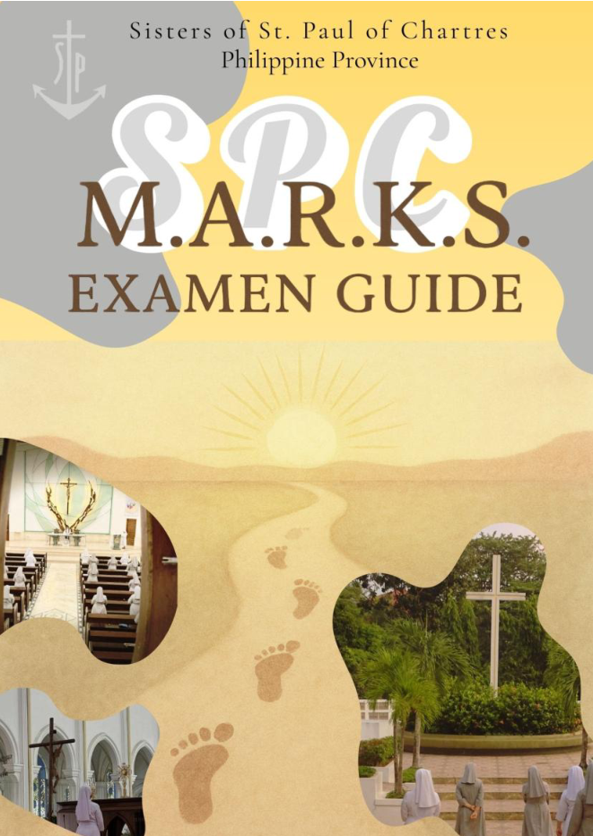

SPC Prayer.Com
M.A.R.K.S. Examen
A prayerful daily journey through the twelve Marks of our SPC identity.
Start today's ExamenBefore you begin
Find a reflection
1Choose a MarkOne area of our SPC life
2Choose a weekFollow the four-week journey
3Read today's promptPause, pray, and reflect